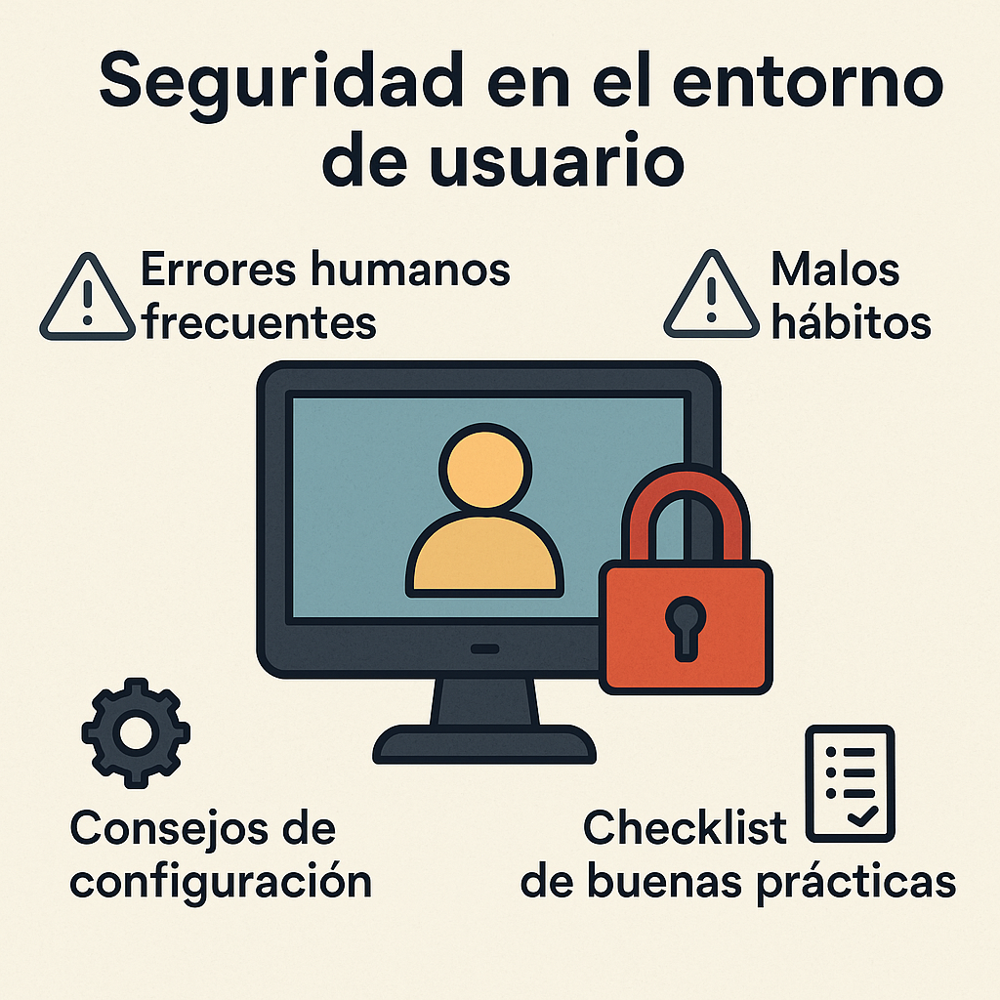
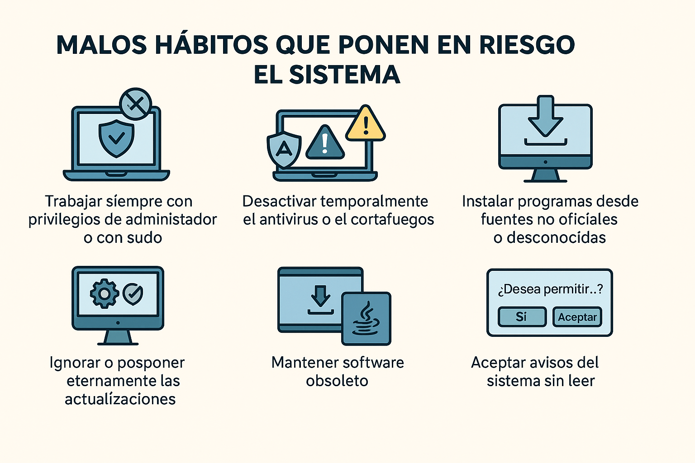

Tema 07 - Seguridad en el entorno de usuario1. Introducción2. Errores humanos frecuentes en seguridad3. Malos hábitos que ponen en riesgo el sistema4. Consejos de configuración para un entorno más seguro5. Buenas prácticas6. 🧪Test de repaso

El “entorno de usuario” es el espacio donde una persona interactúa con el sistema informático en su día a día: el escritorio, los programas que usa, los archivos que gestiona, el correo electrónico, el navegador web, su cuenta de usuario... En resumen: todo aquello que ve, toca y manipula directamente en el equipo.
En la mayoría de incidentes de seguridad, no es un virus el que entra por la fuerza: es el propio usuario quien, sin saberlo, abre la puerta. Ya sea por un descuido, un mal hábito o una mala configuración, el entorno personal puede convertirse en el eslabón más débil de todo el sistema.
Important
La ciberseguridad no depende solo del software, el hardware o las redes. También depende —y mucho— del comportamiento del usuario.
Por eso, en este tema vamos a repasar de forma clara y sencilla:
Los errores más frecuentes que se cometen al usar un equipo.
Los malos hábitos que comprometen la seguridad sin que lo notemos.
Consejos simples para configurar un entorno más seguro y saludable.
Una lista final para repasar nuestros propios hábitos digitales.
No se trata de aprender nuevas herramientas, sino de reforzar la seguridad desde el sentido común y el uso responsable.
Note
Este tema actúa como un pequeño resumen centrado en el papel del usuario. Muchos de los conceptos técnicos ya se han explicado a lo largo del temario, así que aquí nos enfocaremos en cómo las decisiones cotidianas del usuario pueden reforzar —o debilitar— la seguridad general del sistema.
A veces no hace falta que un hacker nos ataque: basta con un pequeño despiste por parte del propio usuario. La mayoría de brechas de seguridad no ocurren por fallos técnicos, sino por errores humanos totalmente evitables.
Estos son algunos de los más habituales:
Dejar el equipo desbloqueado al ausentarse, permitiendo que cualquier persona acceda a la sesión activa.
Escribir contraseñas en un post-it pegado en la pantalla o dejarlas guardadas en texto plano (archivo txt o similares).
Hacer clic en enlaces sospechosos de correos o páginas web sin verificar primero la dirección real.
Abrir archivos adjuntos de correos dudosos sin comprobar su procedencia.
Ignorar las actualizaciones del sistema o del antivirus porque "molestan" o "quitan tiempo".
Conectar dispositivos USB de origen desconocido sin escanearlos.
Reutilizar la misma contraseña para varios servicios, especialmente si uno de ellos ya ha sido comprometido.
Warning
Un solo error humano puede anular todas las medidas de seguridad técnicas que tengamos implementadas.
Conocer estos fallos es el primer paso para evitarlos. No hace falta ser un experto en ciberseguridad, solo tener un poco más de conciencia digital y prestar atención a los detalles del día a día.
Además de errores puntuales, existen costumbres peligrosas que muchos usuarios repiten a diario sin ser conscientes del riesgo que suponen. Estos malos hábitos pueden debilitar seriamente la seguridad del sistema, incluso cuando todo lo demás está bien configurado.

A continuación repasamos algunos de los más frecuentes:
Trabajar siempre con privilegios de administrador o con sudo, incluso para tareas cotidianas que no lo requieren. Recuerda que Superman no va volando al trabajo.
Desactivar temporalmente el antivirus o el firewall para "que algo funcione", y luego olvidar volver a activarlo.
Ignorar o posponer eternamente las actualizaciones, dejando el sistema expuesto a vulnerabilidades ya conocidas.
Instalar programas desde fuentes no oficiales o desconocidas, especialmente si se descargan desde anuncios, correos o webs poco fiables.
Aceptar avisos del sistema sin leer, aceptando todo sin leer, incluyendo permisos de aplicaciones. Le damos a todo que si, “palante palante palante”. Dámelo todo, dame lo negro.
Mantener software obsoleto (como versiones antiguas de Java, Flash, etc.) por "si acaso", a pesar de que ya no se actualiza ni es seguro.
Caution
Cuanto más se normaliza un mal hábito, más invisible se vuelve su peligro. Prevenir es siempre más fácil que reparar.
Identificar estas costumbres es el primer paso para cambiarlas. La mayoría de usuarios no actúan con mala intención, simplemente no saben que lo que hacen puede ser peligroso.
Además de cambiar nuestros hábitos, también podemos ajustar algunos aspectos del sistema operativo para proteger mejor el entorno de usuario. Estas configuraciones no requieren conocimientos técnicos avanzados y pueden marcar una gran diferencia.
Hoy en día no te puedes permitir vivir en un mundo ajeno a los ciber peligros, ni en ámbitos profesionales ni laborales.
A continuación, algunos consejos prácticos:
Activa el bloqueo automático de pantalla tras unos minutos de inactividad. Así evitarás accesos no autorizados si te alejas del equipo sin cerrarlo.
Crea cuentas separadas para administrador y usuario normal. La cuenta de administrador debe usarse solo para tareas puntuales (instalaciones, cambios críticos…).
Elimina o desactiva software innecesario. Cuantos menos programas haya, menos superficie de ataque tendrá tu equipo.
Revisa las aplicaciones que se inician automáticamente. Muchas veces hay programas que no necesitas y que consumen recursos y exponen el sistema.
Asegúrate de que las actualizaciones automáticas estén activadas. Tanto del sistema como del antivirus y del navegador.
Configura correctamente el antivirus y el firewall. No hace falta complicarse: basta con no desactivarlos y revisar que estén funcionando.
Si compartes el equipo con otras personas, crea cuentas separadas para cada usuario y restringe los permisos.
Tip
No hace falta hacer todo esto el primer día. Puedes ir aplicando una mejora cada semana. En poco tiempo, tu entorno será mucho más seguro.
Estas medidas no garantizan una protección total, pero reducen significativamente el riesgo y te ayudan a mantener el control sobre tu propio entorno digital.
Antes de cerrar este tema, repasamos en forma de lista rápida algunos hábitos recomendados para mejorar la seguridad desde el punto de vista del usuario. Puedes usar esta lista como guía personal, o incluso imprimirla y tenerla a mano en tu espacio de trabajo.
✅ Usar una contraseña distinta para cada servicio
✅ Bloquear la pantalla al levantarte del puesto
✅ No instalar software desde fuentes desconocidas
✅ Mantener actualizado el sistema y el antivirus
✅ No hacer clic en enlaces sospechosos sin verificar
✅ Revisar permisos al instalar aplicaciones
✅ No trabajar con privilegios de administrador salvo que sea necesario
✅ Desconfiar de correos o mensajes que te generen presión o urgencia
✅ No apuntar contraseñas en post-its visibles
✅ Comprobar siempre el dominio real de las páginas web antes de iniciar sesión
Important
La mayoría de los ataques no requieren técnicas avanzadas: se aprovechan de pequeños fallos humanos. Cuanto mejores sean tus hábitos, más difícil lo tendrán.
Tip
🫵La mayoría de estos consejos, es posible que hayan salido en el temario como 7 u 8 veces cada uno.
Pregunta 1 – Entorno de usuario
¿Cuál de los siguientes elementos forma parte del entorno de usuario?
a) El router del proveedor de internet
b) El sistema de refrigeración del equipo
c) El escritorio, las aplicaciones y los archivos que maneja el usuario
d) La BIOS del sistema
Pregunta 2 – Error humano
¿Qué acción representa un error de seguridad común cometido por el usuario?
a) Tener un antivirus activo
b) Bloquear la pantalla al alejarse
c) Usar contraseñas largas y únicas
d) Abrir archivos adjuntos sin verificar su origen
Pregunta 3 – Mal hábito
¿Qué práctica es un mal hábito que puede poner en riesgo la seguridad?
a) Revisar los permisos de las aplicaciones antes de instalarlas
b) Ignorar los avisos de actualización del sistema
c) Crear cuentas separadas para administrador y usuario
d) Usar software actualizado
Pregunta 4 – Configuración recomendada
¿Cuál de las siguientes configuraciones mejora la seguridad del entorno?
a) Desactivar el antivirus si ralentiza el equipo
b) Instalar todos los programas que aparecen en anuncios
c) Activar el bloqueo automático de pantalla
d) Usar una única cuenta con todos los permisos
Pregunta 5 – Buenas prácticas
Según el checklist final de buenas prácticas, ¿qué hábito es recomendable?
a) Guardar las contraseñas en un archivo llamado “mis claves.txt”
b) Reutilizar la misma contraseña en todos los servicios
c) Verificar el dominio web antes de iniciar sesión
d) Aceptar todos los permisos sin leerlos